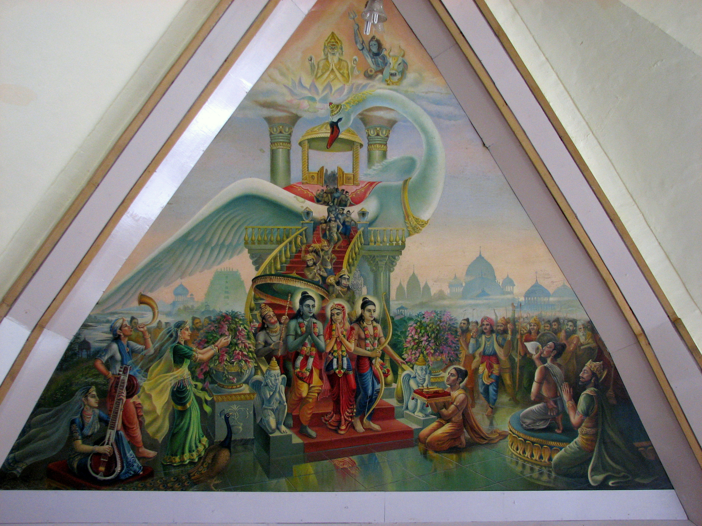

The first narrative centers on the epic Ramayana, where Lord Rama, the seventh
incarnation of Lord Vishnu, returns to his homeland Ayodhya after a 14-year
exile. His triumphant homecoming, following the vanquishing of the demon king
Ravana, is celebrated with grandeur and marks the inception of Diwali as a festival of joy and
illumination.
|

|